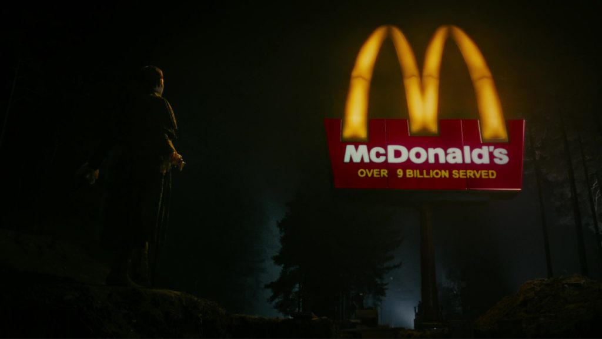
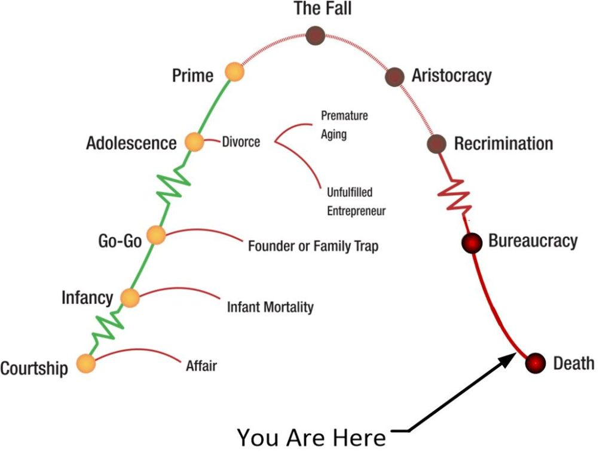
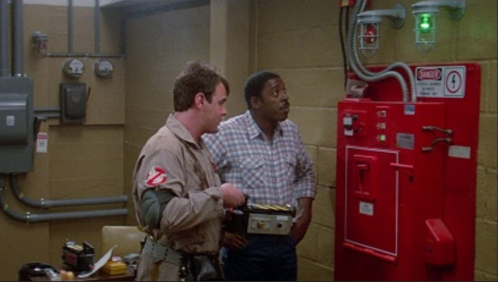
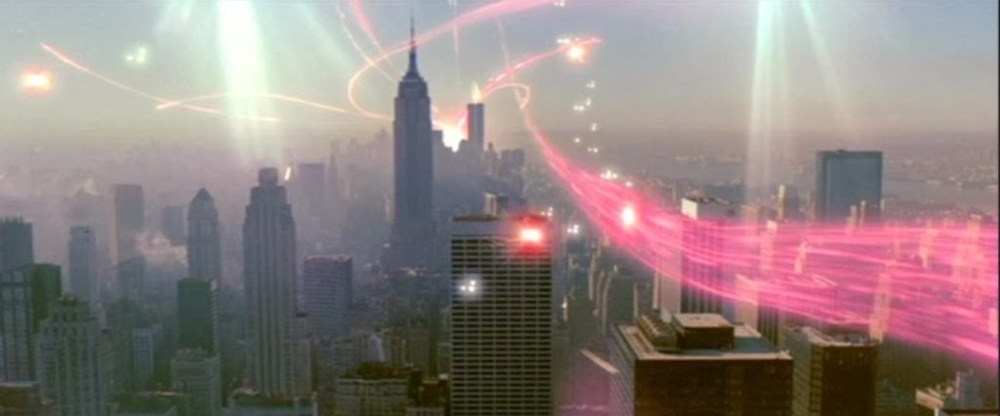
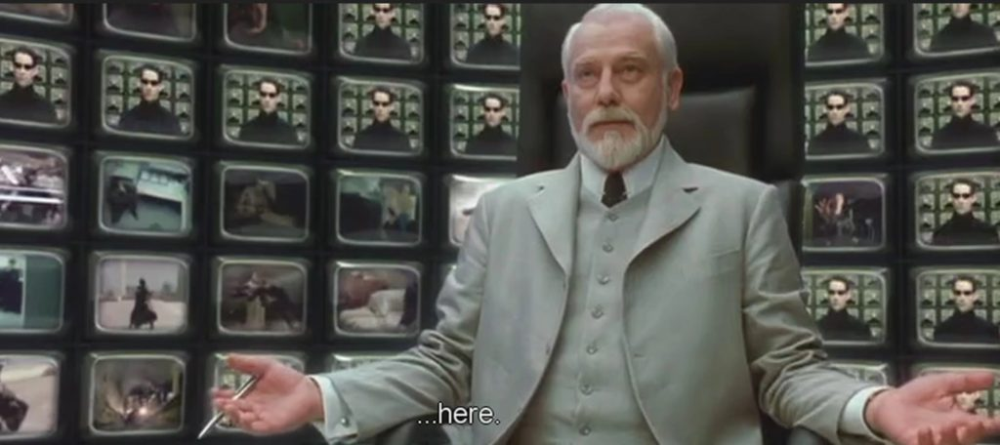

This article consists of answers from The Domain to questions collected by the MM audience. This is the second of (hopefully) many such events. Though, I must admit that it is really a lot of work to do.
I collected the questions from the last week of September 2021, and tried to contact with the Domain via the EBP in fits and starts over this period. I was successful, and unsuccessful. Some times the connection was strong while at other times it was weak. All having to do with my various situation at the time.
An Important note
I asked a question. A very personal question at the end of this article, and obtained an answer.
It is very disturbing, and I am very upset by it.
I decided to put it in and let you all know what was stated. This goes against my “better judgement”, but we will see what happens.
What this is all about
On 17SEP21 I posted an article that related the fact that The Domain opened up a dedicated channel to me via the EBP. As always, it was one-sided, and detailed. But during the conversation, I had no real mental ability. I was in a receiving and reporting state. I was really unable to think for myself. I just queried what I was told to ask and recorded the answers.
You can read this article HERE, if you are confused with what is going on.
Some Background
Most people are aware that the work titled “Alien Interview” is a transcript of a Commander of The Domain when it’s vehicle crashed in 1947. What most people do not know is that this event spawned an American top secret agency known as MAJestic that fell under the ONI (Office of Naval Intelligence).
This waved, unacknowledged special access program handled (and still handles) all extraterrestrial events, technologies and interactions with the United States government. I was a unique part of that organization prior to being retired.
I have numerous devices installed in my body. The seven ELF probes are for MAJestic, with the EBP system is of Domain manufacture and utility.
Terminology
- EBP – A hardwired device that connects MM to The Domain.
- ELF – A hardwired device that connected MM to MAJestic through a Mantid intermediary. Now deactivated.
- The Domain – The name of the species / civilization that the type-1 greys belong to.
- “Old Empire” – A term used to describe a vanquished civilization that used to be in control of this section of the galaxy.
- Comm channel – A link to the MM “handler” or Commander. Rank and position is unknown except that it is a senior being. This is a channel though the EBP system.
- Prison Planet – Earth and the surrounding solar system.
- Prison Complex – Our solar system with four to five other solar systems together.
- Warden – Chief administrator for the Earth.
- Corrections Officers – Police that work for the Warden.
Questions
This is the SECOND collection of Q&A from The Domain.
Here are the questions with the answers. We start off with one of MY questions to get the ol’ ball rolling…
[1] Who is Madesescapalion? Is this just a name out of my imagination, or something that I need pay attention to?
In an odd event, this name suddenly popped into my head, and stayed in my head for hours. Just banging around and around and around, and around. Jeeze!.
It’s really annoying.
Someone is addressing in a formal form like you would a officer, or the head of the FBI or something like that.
So I wrote it down. Then for the next four hours or so it still kept banging around in my skull until I wrote this question down. And then, oh, for Goodness Sakes! This popped out…
Who is Madesescapalion?
Madesescapalion (sic) is the name / a name of / one of the names of the Chief Administrator / High Authority of the Earth-centric portion of this Prison Complex. He is the local de facto head of this facility. He was a (preferential form) human who has injected himself into the prison complex as a means of escaping / avoiding / hiding from The Domain. He conducted this “donning of prison attire” when the Domain defeated the forces of the “Old Empire” sometime between 1135 - 1230 AD during the destruction of the local “Old Domain” space fleet in this region. He has been cycling in and out of “general population” in the Prison Complex ever since. He has systems in place that detect our movements and alert him, and when we get near to him he dies and goes into “Heaven” where we have difficulty following. Once he is safe, he then re-injects himself in the general population again. He is very cunning. He is very skillful. He holds many answers regarding the systems and the control attributes of this Prison Complex.

(I wonder if there is some kind of message in the movie Dark Shadows concerning this administrator.)
I don’t know if this is the right spelling. I just wrote it as it appeared to me.
Ma - des - escapa - li - on
It could also be read as “Ma-des Escapa-Li-on”, as in “Warden Escapa-Li-on”. Tht’s my thinking of this. I don’t know if it is true or not.
Warden Escapalion
Administrator of the “Old Empire”. In charge of this Prison Complex. Went into hiding (inside the prison General Population) when The Domain took over.
Update; Maybe I wrote it wrong. The pronunciation is not "lion" but rather "leon". - MM
[2] What is the relationship between the Domain and the Mantids. Why won’t the Domain ask the Mantids for help?
This issue has been bothering people for some time. It’s a valid concern and there are many questions regarding it. For some people, the Mantids represent angels, while the Domain represent demons. Now they see things in a new light and are concerned.
Personally, I was afraid to ask this as there are some MAJestic prohibitions on Mantid disclosures. But, I just didn’t think about it. I just got comfortable and read and waited for a response. There was a pause of a few minutes and then this flowed out.
Domain & Mantid relationship.
The Mantids (sic) are a species that has their own civilization and culture. They have accepted The Domain jurisdiction in this geographical area. They are also neutral in regards to territory, administration, and other encumbrances of physical life. They have transcended those interests. They maintain their roles within the Prison Complex “Heaven” and are satisfied with whatever might or might not happen in the future. Our relations with them are cordial. And if we ask them for support and assistance, they provide it. They have accepted our administration over this area and Prison Complex, and are willing to work with us in whatever way that we deem fit.
Do you have any thoughts about this answer?
[3] There is a group that you are working with that I am unfamiliar with. So I refer to them as <redacted>. Who are they and what do they do?
This is one of my questions that I would like to see answered better than what I would normally call out. You see my interpretation of direct data from the EBP differs substantially from this around-about method of collecting answers. And so I wanted to see what kind of answers that I would get.
This <redacted> is a new group that was first brought up when the Domain had its first direct communication with me. I would like a name and some background on them, please.
Who are the <redacted>?
They are a species that you have never encountered before, and is rare in this section of the universe. Their society / empire / housing cluster are from a very distant galaxy and have been involved in large massive complexes, works and systems not unlike that of the “Prison Complex” here. They are helping us decode and unlock the systems that we encounter and develop new devices and mechanisms for detection of traps and snares. They have a name, but it would not serve you to understand something that you could not pronounce let along write. They do not physically resemble humanoids or insects. They resemble something else entirely alien to the earth experience as they are not from the same kind of planet or sun that the Prison Complex has. (The image that I get is a very large maggot or caterpillar about the size of a sofa.) You may refer to them as “helpers” like the little people in Willy Wonka’s Chocolate factory, the “oompa loompas”, or the “Minons” from “Despicable Me”.
Note: I will refer to this group as “Technical helpers” from now on. –MM
[4] Are there any catastrophic events due in the next few years?
I was able to get answers to this question but it was full of “stops”, hesitations, pauses, and “drag-ons”. If you all can understand what I am trying to say.
Everyone in the United States are fearful of the future. Indeed it seems like the entire nation is a broken down car skidding all over the place and being run by drunken raging maniacs. The passengers are terrified. What’s ahead is unknown, and everyone wants to know what is after that “bend in the road”.
Catastrophic Events
“The [physical] earth has undeniably gone through catastrophic events… cyclically and continuously. If I recall correctly, the most common recurring event(s) are at about 25,000 year increments or so… pole-shift, crustal displacement – stuff like that. Of course other things cause destruction as well – and I presume some are NOT natural. Anyway, my current best information says that such an event is likely to happen again – SOON – VERY soon (before 2025, but maybe even next calendar year). Can you comment on this?”
There are a number of clusters of time-lines (of large size) that are on a vector route towards a catastrophic purging of life and civilization elements within certain specific societies. What will happen depends on the trajectory of those clusters. The drivers behind their movement are well-established “Old Empire” forces that intentionally manifest results that (the MM readership) you would find distasteful. Thoughts can result in many manifestations. Not only in the movement of large numbers of people towards catastrophic results like lemmings, but also in the turmoil of natural processes. These thoughts can result in natural disasters, fiascos of unexpected intensity, and horrific results that will be unexpected. In many ways it is like an infant playing with a loaded gun. You must not allow horrific consequences whether “natural” or “manmade” to include all sorts of thought-induced reactions to manifest if you can avoid them. In the Prison Planet environment is an MWI configuration that permits world-line changes and alterations. There are various individual IS-BE’s imprisoned within the complex that have the ability to conduct mechanized world-line travel to different locations and different periods. After all, and you must remember, the MWI within the Prison Complex is an artificial construct. And thus, there are people who can create turmoil on certain world-line templates (sic) and then escape to safer havens. This is what is apparently going on. If you were to capture one of these IS-BE inmates and ask them what they are doing they would come up with all kinds of stories and excuses, but none will admit that they are participating in a relative “looting” of certain templates (sic) so that they can enjoy the fruits of their labors in other templates (sic). The good thing is that the “future” is never guaranteed. Being in such an artificial construct as the Prison Complex is, guarantees that those that can control their thoughts, and that understand how the Prison System works can “ride out” any crises or turmoil that might “boil up to the surface” with the confluence of multiple anchored clusters vectoring straight to catastrophic event scenarios. Do not fear the future. Control your thoughts and you will control your destiny. Worrying about others is a fine passion but will not benefit you as your future will be under the fabric of your creation via your thoughts. If you can control your thoughts, even if your local environment undergoes horrific events, you will be able to endure it relative comfort.
I immediate thought that this was NOT the kind of answer that the questioner wanted.
After all, I myself, have been warning about catastrophic events in the future. I say this as a nod to the Deagal Report.
His questioner wanted a yes or a no answer and some details.
And the following came though…
Yes. There will be difficult times ahead. It will be on a scale that many people will be unfamiliar and uncomfortable with. It will not be something that you can point to and say "here it is". It will be a growth, a growing, an amassing of a state. Then it will achieve a critical tipping point. Then, it will be very uncomfortable. It will not be televised, or reported on. Any information that the average person obtains will be lies, distractions or manipulations. No one will know what is going on. This will continue into the "main heat" of the event cycle. (A list was provided in laconic fashion like someone reading from a handout.) Treasuries will be emptied. Resources will be stolen and carted off. Secret military engagements will take place with death and destruction. Back-stabbing, betrayals, and and "under hand" actions will be common. Agreements will be torn-up or ignored. New secret agreements will be written between unlikely participants. (Fourth tone emphasis on the last syllable of the end word in each sentence.) No one will know any of this. Many people will continue to be *oblivious* to what is going on even after millions of people are dead. So much will not be reported. Significant event will pass into history unknown and unrecorded. There are numerous clusters heading towards numerous scenarios. The most worrisome are being mitigated and controlled by the Domain. Yet, the large quantity and diversity of the various participants suggest that some kind of event will happen one way or the other. However, please note that it will happen without anyone realizing it happening until afterwards. There is an over reliance on electronic manipulative media. Many people believe that they know everything that is going on simply by the massive scope of the size of the media. That is a dangerous illusion. Nothing truthful will be displayed. Then when cracks and fissures in the news starts to point to some disturbing things, it will be all over and past the point of no-return. However you can control how those difficult times affect your life. If you control your thoughts, you will control the range / extent of those influences on your life. Do not allow others to control your thoughts. Keep in mind that the Domain is monitoring this situation very closely, and will not permit substantive destruction of the environment. However the mass concentration of evil and distorted IS-BE inmates have other ideas. And there are numerous scenarios where bad catastrophic events might still be able to occur no matter how hard the Domain tries to prevent them. Such as what happened with your World War I.
Many Americans and Western governments, such as those in Europe, and Asian-Pacific nations that have “hitched a ride with Uncle Sam” are witnessing a collapse of everything that they believed in.
But you see, all nations rise and fall.
I have discussed this over and over before. And they follow a normal progression of birth to death. What this questioner is worried about can be summed up in one simple graph here…

Do you have any thoughts about this answer?
[5] Why are the Mantids so keen on helping humans when they know that our memories will be erased later?
Well, why do they keep doing what they are doing. And what are they doing exactly?
Mantids and Memory Erasure
“There is something also bugging me about the mantids involvement on earth (and when I was talking to my husband about it, the PC started doing it’s own thing…weird!) I’m having a hard time articulating it, but maybe someone else can grab it. So here we go: Why do the mantids stay with us our whole lives and reviewing it in the end, when there comes the amnesia and everything we learned is forgotten? Don’t they know about the amnesia? Are they also kind of trapped on earth and cannot escape? Or do they profit somehow from being our wardens?”
The Mantids are not Wardens. They are corrections officers / archivists / medical practitioners and they are bred for their role. They differ from specific Prison Planet to Prison Planet. A form (originally native) to the particular Prison Planet (within the Prison Complex) is elevated and provided with a duty and a role, then their success within that role is determined by that duty. The other four or so systems in the Prison Complex each has their own version of these helpers. In the case of the Mantids, this form is found throughout the universe just like humans are, but this form has been on the earth much longer than any humans have. They call it their home and treat the humans as “adopted children” from their nest. As transdimensional creatures they are particularly suited as the caretakers of individual human consciousnesses. They believe that it is important for them to help and guide the human species from the general population segment of the Prison Planet into “Heaven” and help them grow. They also believe that strife, experiences, and conflict make humans into better beings. This seemingly conflicting belief is not native to their original archetype. Like humans within the confines of the prison planet, they too have been modified. Both humans and mantids have been modified to live, work and stay within this prison complex and never leave it. The Mantids are absolutely convinced of their need to help humans in the prison grow through pain and suffering and then reward them with a rest-period in “Heaven”. This belief was cultivated / manufactured / genetically forced into them by the “Old Empire” when this particular Prison Planet was first established. Thus they, like the inmates that they tend to, are both hybridized archetype forms dedicated to specific roles within this Prison Complex. They believe that they are involved in great compassionate works by providing great suffering to human inmates and then rewarding them with a “Heaven” afterwards.
Jesus! – MM
[6] Is enlightenment a benefit or a distraction?
A good question from someone who is not taking the answers from the Domain at face value. Worthy of consideration.
Again, the query was calm, easy and the response was immediate.
Enlightenment
“The bit about enlightenment is highly confusing. I’m guessing because it is poorly defined/undefinable. The Domain officer said that those who managed to escape the prison mechanism were able to control their thoughts to a high degree. That’s exactly what I would expect from someone on “the way” to enlightenment (Never a final destination either). Those who point to the way also advocate self-knowledge. Isn’t this in parallel with what the Domain advises? Any clarification here would be appreciated.”
Enlightenment is a tool that is used by religions as part of a control mechanism. The individual components used to achieve an enlightened state, such as meditation, focus, mantras, and all the rest are useful components for the control of one’s thoughts. Control of one’s thoughts is THE (THE – emphasized twice) most important skill set that a IS-BE consciousness can develop. If the intention of using these components (mediation / breathing / focus / etc.) is to achieve a state of nirvana (and consider it as enlightenment) it is a “dead end”. What you are doing is using the proper tools, but not building anything of worth or value. You are moving forward doing everything correct, and then parking the results in a great nothingness of no practical utility. You must use the exact same skills that you use to achieve enlightenment towards functional outcomes. “Enlightenment” in of itself is NOT a functional outcome. (The Domain officer is getting rather worked up.) Religions have taken the skills originally taught to inmates to help them leave this Prison Planet and put them on “snipe hunts” that lead nowhere. Thousands of very well skilled and talented individuals were so very close to escaping the clutches of this inmate population, only to be sidetracked. They died and believed that the tunnel of light was the enlightenment that they seek. No. It’s just a trap. Avoid that trap. Do not try to become enlightened. Never try to become enlightened. Use the same skills for enlightenment to control your thoughts and focus your abilities.
I had to break from this for a spell. I have never experienced such a strong impassioned response before. (Not that I have many of these kinds of responses, but they all tend to be friendly – neutral. Not so…emotional.)
[7] Enlightenment and being service to self
Is enlightenment considered Service to Self?
Yes. It is a selfish action.
“There’s also the concept of the Bodhisattva who attains a high degree of self-mastery such that they could transcend, but choose not to in order to help others along the way. Such examples might be Christ or the Buddha in various incarnations.”
You do not need to obtain enlightenment, mastery or perfection in order to help others. You simply help them regardless of your current situation. As it is functionally used, irregardless of what other potential it might possess, enlightenment is a means of tricking IS-BE's of high potential into the "Tunnel of Light" so that their memories can be erased, and they can be sent back to start all over again. Enlightenment has never freed anyone from the Prison Complex. You must be aware of that reality.
After this response, I “felt the need” to put up this picture…
You do not need to be enlightened to help people.
[8] Why not just break the WHOLE machine?
“A great way to ruin the “harvest” would be to poison the crop, or break the machine. Perhaps the “elites” driving us toward destruction might be altruistic if they are trying to end all life on earth and throw a wrench in the gears. Why not destroy the entire earth system so that life here is not possible? Wouldn’t that free all IS-BEs?”
A fast and stunning response shot back to me most clearly…
This solution would be catastrophic for trillions of IS-BE's. All would have no memories except their current incarnation at the time of destruction. They wouldn't know what to do. Eventually a flood of (multiple) armies of the deranged evil IS-BE's could engulf this section of the galaxy with horrific consequences. The neutral to good inmates would easily fall under their control. It would become a runaway train / domino effect / cascading of catastrophes that would run as a toxic cancer. It would envelope entire civilizations and societies and then run unchecked, one galaxy after the other.
And so I added…
In the movie Ghostbusters, bad or malevolent spirits and ghosts are captured and stored in a “containment grid” which was a device that held all the spirits in place. It was a field of electromagnetic energy that the spirits and ghosts could not break through.

However there were forces that wanted to shut off the containment machinery. And, when the power was shut off from the containment grid, all of the stored spirits escaped and flew into New York City in mass…

As they did so they created all sorts of problems.
The Governor of New York called up the the leadership and the National Guard, calling it a National Emergency of Biblical Proportions.
Why not? Is he correct?
[9] Other extraction agents?
“Is there an official title for the robed Elders who have upwards of 20 000 other consciousnesses posted in the prison to act as extraction agents? Can this organization be considered as the same entourage of consciousnesses that are associated with either the IS-BE known as Sanat Kumara or the IS-BE known as Aetherius?”
The answer to this hit me quite fast and was unexpected. I didn’t even read the entire paragraph. I just skimmed over it. In fact, I wasn’t even fully ready to transcribe anything. I had to put my sandwich down and start typing away. I know that no one understands, but that’s what happened here.
There are all kinds of official titles for all the places, locations, people, operations, and positions of everyone. The titles are not in English. And there is no need to generate translations of titles for your use when your own names are already quite sufficient. Remember who you are. You are IS-BE. You define your world, your reality, and how you interact with it. You are GOD. You are the highest most important consciousness in everything. (Pause. Then a continuation.) There are numerous organizations that you refer to as "robed elders". Each one has a niche role in this Prison Environment. (Then he starts listing. When listing, there is a sort of emphasis at the first syllable of the first word, so that I know that it is a new list item. I added numbers to help with the absorption of this information. The numbers were not provided in the transmission, but added by myself later on.) [1] Some have been around for centuries and were initially established by Domain agents (in their spare time) as a pastime. We put an end to the unauthorized efforts around 1955. There are currently authorized efforts only, and it is a part of our overall grand strategy. [2] While other organizations were established by mischievous outsiders who find it enjoyable to play games with the inmates here. For them, it's like putting a leaf in a cage with a bored kitten. They find pleasure and enjoyment "toying" with the more active non-physical components of inmates. It's an activity of theirs. [3] Some have been established by well-meaning inmates that wanted to set up anti-Prison Operations, as a sort of like a form of warfare. It started out as a way to figure out what was going on and then evolved into something rather serious. Some of these kinds of "elders" have been around for many, many thousands of years. They have purpose. The questioner asked about one such organization. [4] Some were established by physical occult organizations from within the Prison population and has taken on a life of their own. These kinds of organizations are many. Some were created by accident. And some were created on purpose. One of the most famous (and prolific) occult leaders in your modern era was a man named Aleister Crowley and he was very active in creating some of these organizations in the non-physical worlds. Some spawned others, and some fractured and grew. [5] Some are part of the traps and snares that were established by the administration of the Prison Complex.These ones are very devious. They are run by Prison Correction Officers. Often autonomously. [6] Some are the result of prayer and meditation leading up to quasi religious sponsored organizations that them "took on a life of their own". And operate with the highest intentions, often in ignorance, and suffering from the chains of dogma. Each one goes by a name or group of names depending on who is dealing with them and why. Their overall mix of intention is roughly... 14% Sincere 11% Mischievous 24% Impassioned / religious 22% Run by the Prison Complex as a snare / trap 19% Accidentally spawned or grown on it's own. 03% Initially set up by the Domain 07% Misc
The numbers are REALLY difficult for me to nail down. So what I did was write them down as transmitted.
Then I discovered that they did not add up so I rounded them downwards to get numbers that made sense. I think that the commander was just pitching vague rough figures for illustrative purposes. The readers should not take these numbers as solid figures but as a guide to get a general feel for the kinds of organizations that are around, and the chances of one encountering one or the other.
We urge caution in dealing with all non-physical organizations. There are many tricks and side-tracks that are purposely designed to put you in a dangerous situation. Then if you fail, you are then recycled, and your physical body dies in it's sleep. If you pass, then you go on to harder more aggressive "tests" and combat arenas. Eventually ALL IS-BE's return back to the "Tunnel of Light" and are recycled in this manner. This system is one of the most common ones used by the Prison Planet to trap those inmates with advanced skills for travel in the non-physical worlds. All IS-BE's should be very, very careful when dealing in the non-physical realm that lies inside of the Prison Confines. There are very dangerous and very complex traps purposely designed to snare the unprepared.
Then, out of the blue, about two days later this comes in.
The questioner has been involved in multiple groups. This is true even though it might appear to be a singular group authority. At least one of them was a Corrections Officer sponsored group. Often the "Old Empire" Corrections Officer groups disguise themselves (it's easy to do) and pretend to be another group. As such they convince the IS-BE that they are what the IS-BE wishes / desires / wants /expects. Then they set up snare scenarios to trap the inmate. It is easy to trap such an inmate, as they are often singular and working alone. Every caution must be taken. One should never perform dangerous actions or efforts in isolation. The risks are far too great.
Thoughts?
[10] Non-physical base monitoring traffic in and out of the Prison Complex?
“Is there an official title for the organization who maintain a permanent station in the non physical domain who are tasked with monitoring all inter-dimensional traffic coming into and out of the earth prison?”
Answers came quick. Clean.
There are multiple organizations, all working independently. The Domain, of course is one. The others are set up for their own purposes. You might think of them as regulatory agencies rather than customs officials. Obviously the Domain has started monitoring the traffic when the fencing and monitoring mechanisms were damaged. Some of the civilizations that (have been) dropping off their riff-raff to this environment have set up monitoring stations and platforms. There is also a kind of constellation / data network / records system / archivist operation that monitors everything regarding this Prison Complex. Additionally, note that even though the fencing surround this entire Prison Complex has been damaged it has not been obliterated. There are self-aware autonomous Prison systems still working, still monitoring, and still in communication with Mantids and Corrections Officers. (There are other creatures that are Corrections Officers as well as Mantids.)
Thoughts?
[11] Domain approved process for reporting targets …
“What is the Domain approved process for lucid dreamers to report targets they suspect with 100% surety as being part of the amnesia machinery when they are unable to provide exact coordinates?”
This one is complicated and I got a headache just trying to sort through all the inrush of data and stuff. I am still trying to sort it out in any kind of meaningful way. A big jumble and mess of data, concepts and information that I haven’t much experience on and cannot speak about clearly. So I will greatly simplify.
The EBP handles tracking and comm with the physical components of an IS-BE when they are attired in inmate "clothing". That is the primary purpose of the EBP. It is to completely monitor the physical person. The non-physical comm and monitoring is another system completely. It is completely different. Part of the Domain operations on the non-physical bodies is to release the chains of control by the Prison Administration. (Greatly simplified.) But part is something else as well. Depending on the person, other systems can be added or subtracted from the non-physical body of a given inmate. One of the more substantive and comprehensive operations is a very complex procedure that permits tracking and recording abilities associated with a given non-physical body. Because of it's in-depth / invasive / critical infrastructure changes /alterations /dangers it is only used on the most important or critical non-physical bodies (A lot of things that I have no idea of. Simplified the response.) that have a need to be observed and monitored. This procedure is given to those that are active in "Lucid Dreaming" activities and related movements in the non-physical world that ALSO wish to participate with the Domain as a volunteer. If this occurs then the individual would experience a very strange "experience" (a bunch of concepts that I am at a loss to explain.) that would not appear to be like their normal "Lucid Dreaming" events. Instead they would be having operations performed on them, and then released. Then for the most part, their normal activities would continue as before, though they might start to get "nudges" or messages or directions. Which would be "coaching" / requests / advisement from the Domain handler to them. Their ability to understand what is going on takes time and there is no set training period for this activity. Afterwards they would not need to report anything. Their experiences would be monitored tracked, observed and noted. This is a unique procedure for unique assets. For most volunteers this is not necessary.
Is this reasonable?
[12] Suggestions or messages for escapees from the Prison Complex
“Are there any messages for those who have escaped the prison through lucid dreaming and retain much of their memories as an immortal consciousness ie as an IS-BE?”
Again this is quick and surprisingly short.
Keep in mind that as long as your physical body is alive, your consciousness will still be connected to it. The only way that you can escape this Prison Complex is to physical die within it. Yet, when the physical body is dead, your IS-BE consciousness will still be connected to the non-physical body. For many, they will appear to be one and the same. At that point, there are a small number of IS-BE's that [might] possess the skills to actually leave the Prison Complex. If they have that ability, we suggest that they request assistance from The Domain. The Domain is the highest authority in this region. By requesting assistance, it is no different from calling the Fire Department, calling for an ambulance, or calling for the police. The IS-BE consciousness should have no fears or qualms about asking for support and assistance ever. Call for help. That is what you must do, and wait for us to arrive.
What are your thoughts?
[13] Black-hole anomaly reference
“Do the Domain know about a black hole like “anomaly” that permeates through both physical and non physical worlds and has the potential to “decompose” such worlds”? This is hard to describe in Earth based language. From outside the prison it would be appear as a dark void that encompasses many of these non physical and physical worlds simultaneously.”
When I read this I got the impression of the Commander / handler sighing and looking up and thinking. Not that it actually happened, mind you, but that was the impression that I had.
And then this…
Ask this question later.
So then I waited… I waited all afternoon, had dinner and then I asked again. The response was like a tired old kindly grandfather or cherished uncle that only wants the best for you.
There are many things in space and the surrounding area that are unknown to the human inmates. This is in both the physical and the non-physical realms. Some resemble a black-hole as you consider it. Others are something else entirely different. There are voids, and areas of occluded thought transference. There are many, many areas, and many such objects. I would advise staying away from any objects or situations that you do not understand. This is for your own safety and to prevent you from being engulfed in a snare of the "old empire".
What are your thoughts?
[14] Any “consciousness” doping facilities?
“Are the Domain aware of “consciousness” doping facilities within the non physical planes where hypnotic commands for reality brainwashing are uploaded to the IS – BE via a type of screen?”
This was an interesting response. It was dismissive. And you all shouldn’t be taken aback by it. It’s just a response.
Yes. The Domain is aware of everything.
I am sure that this isn’t what the questioner wanted to hear. But this is all that I’ve got. Simple. Are you bothered by it?
[15] The “Wet Room”?
“Is the Domain familiar with a device known as “the Wet Room” which has the ability to “spin” a consciousness through multiple non physical worlds simultaneously and is used specifically to torture/ disorientate an IS-BE traveling outside their physical body?”
I had to read some writing on this and then re-read the question. The answer was slow in coming. Maybe too general. It was hesitating and sluggish.
IS-BE's can create anything by thought. It is common to create entire universes. But those that are inmates have forgotten this ability and the Prison Correction Officers use all sorts of devices and systems to control those in the non-physical environment. This "wet room" is one such system. There are many, many more. Some are truly awful. You do not want to get involved in any of these traps, snare or devices if you can avoid them. Additionally, evil people use the lack of understanding and knowledge of the IS-BE inmates to throw them into these devices of torture. Then they gleefully enjoy the agony, fear, pain and suffering that they witness.
One of the problems with this kind of third party communication is that the receiver” myself can only communicate ideas, thoughts, images and concepts that I am familiar with.
I had a very strong feeling that the Commander knew what was being asked, but was frustrated in that he couldn’t provide meaningful answers to me personally.
I suppose that were he talking to the principal questioner, he would be able to transmit ideas and answers much more readily. The Wet Room.
[16] Other escapees?
“Are the Domain aware of any IS – BEs, apart from their Officers mentioned in Alien Interview who were caught in one of the electronic traps and were able to escape?”
There was a kind of frustration in the “tone” to this response.
Others have escaped. This is true. However, today it is very uncommon event. Each time that there is an escape, the Warden (or his surrogates) creates a new system of preventative measures so that it will not happen again. Many of the escapes occurred early on after the system was built, and over time, with the addition of more snares, traps and systems, they became fewer and fewer. Any escapes are highly unlikely to occur without Domain assistance. (Intentional pause. Then he continued...) It is worth noting that when the first escapes began, at the start of the Prison Complex, the "Old Empire" needed to locate a militarized police force to patrol the region around the complex. And it was this arm of their space forces that we first battled when we entered this solar system. (Clear image of other actual military forces coming later.) When the escapees were captured, they were re-injected into the Prison Complex and treated as "escaping offenders". This gave them "special treatment" by the Mantids. They were earmarked for tougher-than-usual difficulty in mapping out the pre-birth world-line template (sic) and much shorter cycling in reincarnation events. (Shorter lives on the earth, followed by a special "Hell" area located in "Heaven" made just for them and other escapees.) This is a standard procedure by the (Mantid) Corrections Officers. The closer an inmate gets toward escaping, the more difficult his / her next reincarnated life will be. This is controlled by the Corrections Officers in "Heaven". Today the space surrounding all Prison Complexes, both the physical and the non-physical environments are filled with a minefield of traps and snares. They are multi-layered. We have begun cleaning out large swaths of "space" (sic. I don't know why he wanted me to add this notation.) with systems that we have developed just for this purpose, and it is a tedious and time consuming process. Part of the reason for this is that the traps and snares react only to inmates. Not to normal humans and other species.
What are your thoughts on this?
[17] How can an average Joe communicate with them? (Aside from communicating via MM)
I put this question out, and then sat by waiting for a response with my cup of coffee. As it is the way that I deal with these things. I then wait. While I was on another task (my personal journal) I felt the rising hair on the back of my neck (well, it’s like rising hair on the back of my neck. Not actually the same thing.) and switched over to record it.
I vocalized it again and then typed the response.
There is no need for an "average person" to contact us. We have everything under control and in place. It might appear to be cold and heartless, it's just our efficiency. If we need to contract you, you will be contacted. What is important is that everyone who works with us follows the rules and obeys the procedures. The Domain works as a unified whole and a "well oiled" organism. We need people who wish to be part of this unified whole, and not a bunch of college hooligans out for a Saturday lark. (I get the strong image of a box of kittens running all over the carpet.) (Followed by an equally strong image of a group of college students riding in a distressed model "A" with words written all over the car, and the guys wearing strange white and black shoes, striped long sleeve sweaters with sewn on letters, and the girls wearing skirts and holding triangular pennants. I get the impression that the Domain Officer must have spent some time on the Earth in the "Roaring 20's".) If and when you are contacted by, need to communicate with, or participate in any kind of interaction with us, it is important that you remain calm. Do not allow your thoughts to take you to bad places. These are fears set up by the many many layers of the Prison Planet system of control. You will find that working with us is very efficient and satisfying, and that we will be able to assist you in the recovery of so many things that you have lost. (I think that he was talking to the questioner directly in this response. Not in generalities though me.)
Interesting.
[18] How can I detect and possibly circumvent the Old Empire aesthetic mechanisms to keep us enslaved to the physical environment?
I felt that this was a good question, and the Domain Commander agreed. The answer came forth readily without hesitation.
The typical consciousness will easily be drawn into the snares and the traps. This is far truer today than say 20 or even 40 years ago. Most inmates have become accustomed to manipulation to such a degree that they cannot recognize what is going on. This is on all levels, from the physical to the non-physical. The best equipped to avoid the snares are those with the ability to control their thoughts, and who are very cautious and focused on end goals. Those that are not easily distracted, or manipulated by strange new events will be those best able to avoid the traps. That being said, the traps and snares are very devious and cunning. It is unlikely that anyone can avoid them without help and assistance. That is why there are numerous non-physical organizations. Such as "elders", "leaders", "Prophets", and the like occupying roles in the non-physical reality. The purpose of these organizations is to assist and muster groups of IS-BE consciousnesses to fundamentally fight, or avoid the traps set up by the "Old Empire" prison administrators. Unfortunately, many of the organizations are not effective enough. Their efforts have had a very minor impact on the entrapment mechanisms of the Prison Complex. We ask everyone who works with us to focus on controlling your thoughts. Avoiding areas of danger. And helping others in need. When the time comes for your egress from the prison system, we will be there assisting you. All you need to do is call for us.
Could it be that some of the inventions of the last few decades have become traps and snares themselves? Like social media?
[19] Can they teach us how is to live and work as citizens of the Domain?
I only just glanced at this question and got a definite answer.
Yes. Absolutely. All imprisoned IS-BE's once they regain their memories will desire to return to people, places and things that they know. For many of them, not all, but a high percentage of them, this will mean returning to the geographic confines of the (former) "Old Empire". But they will be quite different (from what they once were, and from their former friends) given their experiences in the Prison Complex. We will always be willing to accept rehabilitated prison inmates of this harsh environment into The Domain. And to this end we are working on rehabilitation plans and systems just for this express purpose. Rehabilitation is necessary, first to reacquire an IS-BE identity, and secondary to re-enter the IS-BE community as a whole. All inmates will have been damaged by their relentless tortures in the Hell that is the Prison Complex. (Message addendum.) Keep in mind that the (former) "Old Empire" is now the De Facto territory of The Domain. So that makes any released inmates automatically members of The Domain. However this is not what the questioner asked. They wanted to know if they will be able to have a substantive ROLE as an ACTIVE member of The Domain rather than just a citizen under it's authority. And the question is, of course, yes.
What are your thoughts on this?
[20] How dangerous are the traps that surround the Prison Complex?
I know that they are pretty dangerous. But I figured that I would ask just how dangerous. You know, maybe just thrown back in, or perhaps something very lethal to IS-BE’s right? So I thought that I would ask.
This is the answer.
Check your cell phone.
WTF?
I turned it on, and when my Douxing (Chinese version of TicTok) turned on and opened up. This is the first video that it displayed. An interesting coincidence.
It’s pretty amazing how this coincidence came up.
[21] Anchoring to a time-line?
This was asked while I was very busy with personal issues. So, I plopped it down and then left it be until I could get around to it. When I had a chance I got straight to it. Tuning in was calm, smooth and easy. Though I really didn’t understand the question well-enough, the answers just flowed forth.
“Not sure if you’ll read this as it’s an old post. I got hit by a car, “died”, and got shunted into this almost perfectly similar reality except for a few changes. Mandela effects flip flopped for a while.”
Would The Domain be able to explain what technology/process is involved in anchoring us to a body & timeline?
Mandela effects, anchoring, world-line cross overs, and all other aspects of these strange events are unique to the prison environment that you inhabit. You refer to it as the MWI. It is an artificial construct. It is not the way the true universe works, only the universe that you live in. The creation of this universe is very detailed and very complex, and it is unique to the understanding of the group of IS-BE's that created it. They obviously spent much time working on it, developing it, and honing it to a degree of perfection. Usually, IS-BE's are so enraptured with the pleasures of the physical body that they lose contact with their "spiritual" (sic) side in the non-physical and they forget what abilities that they have. Obviously this was not the case during the fabrication, construction and design of this prison facility. Some mighty (major) skill sets were called into being (use). The Domain is in the process of studying this system. Each day are new surprises. We have been working with the [technical helpers] to discover it's operation and design. From which we would be able to extract any traps, snare, or problems that lie hidden. Anchoring to a time-line, world-line interactions, and everything associated with it is unique to this prison environment. Certainly we understand the need to anchor groups of consciousnesses. It's like herding cattle. You cannot have them all over the place and clumping up. And this was a technique that we developed over time as we became familiar with this environment. It is not totally well understood. Anchoring is one of the containment systems used by the administration of this Prison Complex. They use it to herd inmates. Thus they can control them, and move them towards wars and conflicts that will result in the inmates expending all of their energies on wasted endeavors. Thus, and such that they will be unable to concentrate on anything else. Remember that the entire Prison Complex is designed to have war, after war, after war. It's designed to be a Hell. Where the inmates are tortured over and over. Then forget everything, are re-injected, and then relive the same kinds of events. The Domain is using this system to avoid wars, conflicts and turmoil. Though, there are many, many strong forces inside the Prison Complex pushing towards this goal aggressively. MM uses the visualization method of a three-dimensional map. It is extremely helpful, but not wholly accurate. The actual environment is like a hot cauldron full of all sorts of things. (Food, stew, meat, eggs, tentacles, etc.) Anchoring is similar to turning the knob on the temperature control. Anchoring to avoid conflict is similar to turning down the heat on the cauldron. All of the items settle. Some sink to the bottom, while others float to the top. Anchoring to create conflict is similar to turning up the heat on the cauldron. All the items start to toss and turn as the mixture boils. During this period, there is a lot of steam, and smoke and evaporation. And the volume of the cauldron decreases. If you think of the volume to be the prison population inside of the Prison Complex, then you can see that the anchoring towards wars will decrease the actual prison population inside of the physical realm. Many will die off. And thus got to "Heaven" to be forgiven, forget their memories, and "rewarded" with a break. Then the cycle begins again. This is why The Domain has had operatives anchor world lines. They acted as a method of controlling the temperature of that cauldron. (Pause) Anchoring to a world-line template is of a different scope than group anchoring efforts. Much of what the Domain has been involved in has been group anchoring efforts to control "the temperature" of the "cauldron stew". What you are asking about is what happens when you are following a normal progression on a world-line template. Then there is an "event" where somehow your IS-BE consciousness "skips" and slides to a totally different template. Then, perhaps, skips and slides to another one, and then again, and maybe again, and again. This is a big subject...
I needed to take a break and a breather. I had the impression that I was about to get a massive dose of information.
So I said “tone it down please”.
And got up, went downstairs and got my self a coke from the vending machine.
If you use the 3D template map concept that MM promotes then the best way to visualize this as a railroad line going from one world-line to the next. It's currently visualized as a plain and simple line. But if you visualize it as a railroad line it might be easier to understand. While the topographic surface is the strongest likelihood of movement, it is not all the options available. There's "tracks" going up and above, and "tracks" going down below. These are equivalent to "nearby slides". If you can imagine world-line template maps stacked upon each other like a layered cake, and that an event occurs that has you make you slide up or down into a different layer in that cake, that is what is going on. Sometimes the "event" is so traumatic that you slide to a different world-line template. One near by, of course, but not exactly the same as the one proceeding it. In effect, you are not just simply moving from world-lien to world-line, but you are actually sliding up or down on the Z-axis as well. In general, if this happens, the chances are that you momentarily slid to a pre-birth (default) world-line template when the "event" occurred. As you must have somehow altered your existing template in your past and have been riding it for some time on your own autonomously. Then, when your "components" tried to latch on to the the highest probability relationship items / components /vectors it threw you off, and you ended up on a different template, and again and again, until the "components" resettled with highest-probability fits based on the thoughts associated with you at the moment of the "event".
I have no idea what the last part is about. I have to reread it a couple of times to figure it out. I think that the “components” of our consciousness ties us to the templates that we inhabit.
And thus the selection of the pre-birth world-line template must somehow tie our IS-BE consciousness with a particular world-line.
Thus, when an “event” happens, that connection can be disrupted… until it resettles.
Not every “event” is physical only. Non-physical events happen and scar our non-physical bodies.
[22] Why/how is our awareness prevented from carrying through to the dreamworld?
“I know the body is checking for movement and thoughts and will not enter sleep until the mind has blanked out, it’s an obvious “feature” built in for control.”
This is an intentionally engineered "interrupting" feature of the inmate prison body and how it differs from that of a "normal" human archetype body that lies outside of the Prison Complex. The physical body is intentionally designed to NOT communicate or travel when sleeping. However, this is a developing function. It does not appear immediately. It is a feature that "grows" over time. It's an intelligent feature. This function acquires experiences, and sensory input as the IS-BE is born in the physical reality. Then over time, this intelligent biological alteration manifests. By the time the entity is five to seven years old, most of the population will be unable to communicate with the "dreamworld" (sic). However, it is not a perfect system. Certain IS-BE's of strong character and ability, as well as strong environments that foster the belief of the spirit-world as a familial norm, can avoid this biological and non-physical layer of interruption. The entity as a person can learn to be able to have "Lucid Dreams", and "Astral Projection" as well as many other skills that are denied the vast humanity that is imprisoned. Since this is a developed "growth" that is acquired over time, it is possible to destroy that "growth", alter it's composition or destroy it entirely. This can occur by directed thought, skilled intention, and practice. Since the vast majority of inmates do not have this ability, this system of control is effective in the Prison Complex.
What are your thoughts on this?
[23] Why is astral projection hard to achieve while awake?
Strangely this response happened very quickly. I don’t even think I got a chance to take a breath.
It’s really a lot of work doing this you know. I feel very “speedy” (a LSD reference for your children of the 70’s and 80’s). My body and hair are getting exhausted from being so electrified, and my body temperature is running rather hot. I am bathed in sweat.
Sensory overload. Your engineering physical body is unable to partition out multiple consciousnesses like the IS-BE can. Thus, you must rely on a singular consciousness to manifest events. If you want to conduct astral projection then you will need to be able to separate your physical senses from your non-physical sensing ability. This is a normal feature of all physical human bodies, and is not an engineered feature of the inmate prison body.
What are your thoughts on this question and answer?
[24] Why do memories from astral/dreams not carry over easily?
He continues. And my keyboard is getting slippery with all the sweat from my fingers.
Memories are stored outside of the physical body. When a physical body accesses the memories they access what can be be described as RAM. It's the everyday use memories. This varies from person to person. Some have an easier time accessing the day to day memories. Other have a difficult time, and still others with a photographic memory remember everything. You can remember what you had for breakfast today simply because you are using local memory. Your inmate container allows this random access of everyday memories. The same is true with your memories of what happened one year ago. All these memories are stored on (something similar to the computer memory system known as) "RAM". Normally, all "normal" (unmodifed) human bodies permit access to a central repository of memories. This is equivalent to a "hard drive". Not inmates however. The engineered inmate bodies have blocked access to the "hard drive" that contains all of the memories that you as a IS-BE has. This ability was not only erased by the "brain washing" efforts upon entry to the Prison Planet, but access to it is not physically possible in the physical inmate (engineered) body. The entire access circuitry is ripped out. When you, as an IS-BE exist as consciousness from the physical reality to the non-physical reality, your memories (and experiences) are being recorded and they go straight to the "hard drive". But when you are in the physical body, they go into RAM and the "hard drive". Inmates are never permitted to access the "hard drive" memory circuitry. Only RAM. It's biologically engineered into all inmates. However, when an inmate "dies" and leaves the physical "general population" and gets rewarded with a "Heaven", he or she can access these "hard drive" memories by permission. A Corrections Officer (usually a Mantid) will accompany you to a "viewing area" where certain memories will be presented to you to observe. However, that is only for inmates. All unmodified humans do not have this problem and can access both types of memories in real time with no problem whether they are in a physical body or not.
So, in a way, you can access some of your memories. So it’s not all bad.
[25] Is this related to the memory wipe that our memories are so poor now, or biology/soul interaction?
And this came fast as well…
It is engineered in all inmate bodies.
“With the timeline I’m sure we can shift to a completely alternate reality with a new history but I’m unsure of the process involved. And yeah, thought dump sorry, I just see these bodies are actively designed to stop us leaving in soul form.”
You can only use the skills associated with world-line , time -line travel to MWI events within the prison universe; the Prison Complex. Your thoughts will not take you out of the Prison Complex alone. That is why the entire complex is constructed as it is today. It is unlikely that you can create a universe (via a alternative reality slide) within a universe that controls the construction of your being.
The science fiction movie “Inception” comes to mind.
(A bunch of "chatter" and a confusing mix about stuff related to "time travel" to a point in time before the construction of the Prison Planet, and other things that I am having a bunch of time understanding. I think that I a just getting tired.)
Guys, I appreciate all this input, but really. Please don’t pull a “Back to school” Rodney Dangerfield on me.
These last five questions by one person just about killed me.
It makes me just want to stop and end MM completely. Have a heart and some compassion here. Please everyone, one or two questions only. These five to eight questions in a single go is not tenable. It is not something that I want to do and it is personally very, very difficult for me to handle. To give you all an idea what it is like, then do this; Grab a screwdriver and stick it in a power outlet. Now, keep putting it in that outlet for six hours.
That’s what it’s like.
When I refer to Rodney Dangerfield, “Back to School”, I am referring to a singular scene. Where the one professor gives him one singular question.
It’s just that it has these massive 64 parts. Poor Rodney answers, “concerning part 63b, subpart d, section R-12, part 14″…
It’s tiring and takes a lot out of me. Christ. I need a drink!
[26] There must be flaws in the system where we can throw that anchor off somehow?
The questions continue…
Yes, there are flaws, but they are very difficult to locate, and even harder to exploit.
Enough! I’m toast. No more questions. This is more than enough for one person.
After a break of two days, I sat down and added these questions from someone else…
[27] My question is why the “caste system”.
“Why do the type-1 have different roles, ranks, bodies, and even abilities. Unlike the mantids they use physical bodies and are limited to the limits of time and space. STO all have the same soul structure from my understanding which are different from STS. Why this? Could you please clarify.”
Everyone is an IS-BE. Everyone is thus capable of any position within any society. That includes the Domain. The members of the Domain have roles within society based upon their abilities, and capabilities. We have a very rigorous method of merit that determines where an IS-BE "fits" within our society. Certainly anyone can rise to become whatever class they want. It is not a rigid caste structure. It is a hybrid class structure. The only limitations are those of the IS-BE itself. A goose cannot swim under the water, but with practice it can take longer and longer periods of time under water as needed. By practice, the goose can indeed start to swim somewhat under water. It just takes effort and drive and ambition. However, most geese do not try to swim under the water to their roles are locked in, like a caste, to floating on the water and flying. That is what they prefer. Now, to achieve the class rating that they want, the IS-BE must get to that position through hard work, determination and merit. In the case of the goose, it must try and try and practice and practice. It must do this over and over again until it is adept at swimming under the water. With each class are certain "benefits" or "allowances" granted to the IS-BE. Such as the ability to use certain doll bodies and so on and so forth. (New subject.) Note that all members of The Domain are inherently neutral in sentience. However the accumulation of experiences manifests in the desire to serve the society; The Domain, to the best of one's ability. This is because of the way the society is structured. In societies that grant roles based on effort, then all efforts (in all societies) eventually evolve into Service to Others sentience. Those societies that are not based on merit, hard work, community, or effort tend to evolve into Service to Self sentience's. The more corruption, graft, crime, corruption, the more selfish the society becomes. Thus, because of this, the vast majority of IS-BE's in The Domain are Service for Others sentience.
Any thoughts on this answer?
[28] And volunteering to work with the domain?
“Would this mean a harder life (experiences) or what would you really be doing?”
No. In many ways it could be much easier. The questioner is dealing with many non-physical issues that reflect how his reality manifests. By working with The Domain, many of those non-physical issues can be suppressed or even completely eliminated. Every action that one takes has tradeoffs. For many inmates, joining the Domain adds an extra layer of effort that one might not desire. Such as MM here. However, for those, such as the questioner, the benefits of working with the Domain far outweigh any of the negative issues. It is all about tradeoffs.
Any thoughts on this?
Some final thoughts leading up to question [29]
You know, these answers bring up so many questions for me personally.
You see, I as MM was in MAJestic and in my interactions I fully came to understand the topography of the MWI Prison Complex.
- I came to understand how the Prison Planet works in great detail.
However, from these answers, it is clear that this kind of knowledge is not available to The Domain. They are having a great deal of difficulty in figuring out all the layers, the traps the systems and so on and so forth.
- The Domain captured this geographic region. However, they do not know how the Prison Planet works.
From the answers (here and before) it appears that it is possible that I know (perhaps, and I am only saying) more than The Domain does about this Prison Planet.
I understand how it works and the many, many layers and how to navigate inside of it, and so much more. Right? Are these things that I just casually picked up in all my slides and adventures? What are these “things” that I somehow understand in great clarity?
Well, whatever they are, these are things that are unique to The Prison Planet.
Not to The Domain.
Not to the universe outside of the Prison Planet. Only inside the Prison Planet.
The Commander and all the workers in The Domain know many, many things. But they DO NOT know the structure and the architecture of this complex. They need to know it in order to turn off the suppression and monitoring equipment. And so they are enlisting me to help them.
Why ME?
Was it just that I had the right education and the right background and the right place and time and coincidentally it all fell into place when I joined the United States Navy? As this is what I have believed all these years. But then again… there is no such thing as coincidences.
Do you see what I am saying?
Perhaps my involvement in MAJestic goes far deeper than what I had been made aware of.
Perhaps I, myself an a reincarnated kind of aide or assistant, or architect or something or the other. Maybe I am somehow tied with some “Old Empire” skills, knowledge.
Maybe, you know…
… it was like what happened in the Ancient China. When an Emperor had his treasure tomb built, he then killed all the workers who built it, and then buried his architects in the tomb with him so that the secrets of the tomb will never see the light of day.
Maybe that is what happened.
I am not saying that I am this person or something like that. Not at all.
But it does seem really odd to me, and as these Q&A responses flush out I find myself asking these questions more and more often. Why do I know so much more about the inner workings of the Prison Planet MWI than The Domain Commander assigned to this area?

What is the story?
And so, it’s really one of those moments “of truth”. You know.
What the Hell is going on?
I put it off for a day, but I just couldn’t wait. I had to ask.
On Sunday 26SEP21 after I had a bowl or home-made chicken noodle soup, I asked the question.
[29] Who am I? Who is MM?
And the answer came back swift and clear.
Mades Escapalion
Thoughts?